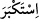

haksız yere büyüklenenleri âyetlerimden uzaklaştıracağım.” (el-A‘râf, 7/146)
buyurmuştur. İstikbâr ise bâtıl olan kibri ortaya çıkarmak için kullanılır. Nitekim Allah
Teâlâ, İblis hakkında: “ (büyüklendi)” (el-Bakara, 2/34) buyurmuştur.
el-Avârif’te şöyle denilir: Kibir, insanın kendisinin başkasından daha büyük olduğunu
zannetmesidir. Tekebbür ise bu zannını ortaya koymasıdır. Bir hadiste şöyle
buyrulmuştur: “Kalbinde zerre kadar kibir olan cennete giremez. Yine kalbinde zerre
ağırlığınca îmân olan da cehenneme girmez.” [139] Hattâbî der ki: Bunun iki te’vîli
vardır: Birincisi, hadiste kasdedilen küfür kibridir. Çünkü o, îmânın karşılığı olarak
kullanılır. Diğeri ise Allah Teâlâ o kimseyi cennete sokmak isterse, kalbinden kibri
çekip alır ve böylece kibirsiz olarak cennete girer. Fethu’l-karîb’de der ki: Bu ikisi de
uzak te’villerdir. Çünkü hadis, bilinen kibri yasaklamak için vârid olmuştur. O da
insanlara tepeden bakmak, onları hor hakir görmektir ve hakkı kabûl etmemektir. “Eğer
cezayı hak etmişse cezasız olarak cennete giremez.” denilmiştir. Yine “Müttakîlerle
berâber ilk cennete girenlerden olamaz.” da denilmiştir.
Ebû Hüreyre (r.a.) Hz. Peygamber (s.a.)’in şöyle buyurduğunu rivâyet etmiştir: Allah
Teâlâ buyurdu ki: “Ey Âdemoğulları! Sizi topraktan yarattım, dönüşünüz yine
toprağadır. O halde kullarıma karşı mal ve soy konusunda tekebbürde bulunmayın.
Benim huzûrumda küçük karıncadan daha mütevâzı olun. Kıyâmet günü neseblerinize
göre değil amellerinize göre karşılık göreceksiniz. Dünyâda hayvanların küçük
karıncaları ezip geçtiği gibi, ben de âhirette dünyâdaki mütekebbirleri, insanların
çiğnediği küçük karıncalar hâline getiririm.” [140]
Hikâye edilir ki: Mûsâ (a.s.)’ın yanında iki kişi hasep ve nesepleriyle övündüler.
Birisi: “Ben filan oğlu filânım” diyerek dokuz ceddini saydı. Allah Teâlâ Mûsâ (a.s.)’a
şöyle vahyetti: “O’na; Onların hepsi cehennemdedir. Sen ise onların onuncususun.” diye
söyle.
Şâirlerden birisi der ki:
Yeryüzünde ancak tevazu ile yürü.
Onun altında senden üstün nice kavimler vardır
Sen izzet, emniyet ve çok yüksek mevkide olsan da,
Daha güçlü koruması olan nice ölmüş kimseler vardır.
Şu halde tevâzua ve kimseye karşı böbürlenmemeye sarıl. Çünkü tevâzu cennet
kapılarından bir kapıdır, tefâhur (övünmek) de cehennem kapılarından bir kapıdır. Sana
gereken, cennet kapılarını açmak, cehennem kapılarını kapamak, hakîkatte fahrın
(övünmenin) ancak kendisiyle elde edildiği mânevî fakrı elde etmektir. Kişi, mânâ
devletine, hâl riyâsetine ve makam üstünlüğüne ancak tevazu süsü ve fenâ ziynetiyle
ulaşabilir.
Hâfız der ki: